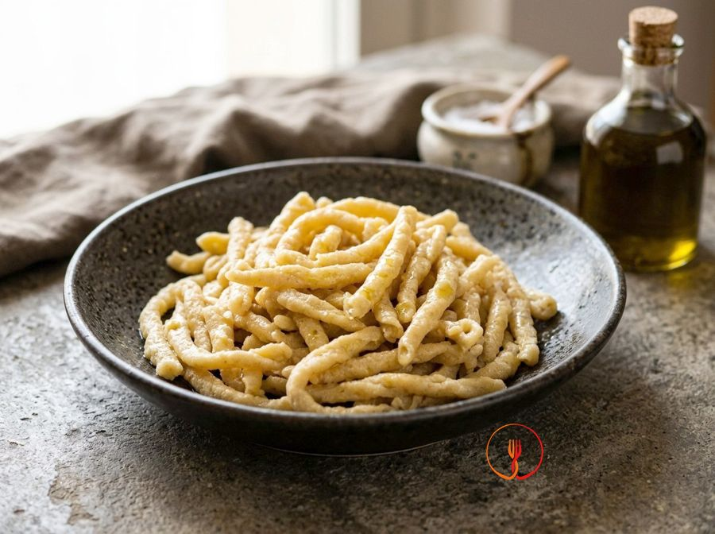

Fresh pasta
Ingredients
- re-milled durum wheat semolina400 g
- lukewarm water220 ml
- salt1 pinch
- extra virgin olive oil (optional)5 ml
Allergens
Gluten
May contain traces of: Mustard, Soy.
Method
- Pour the re-milled semolina into a large bowl and add the salt.
- Pour in the lukewarm water a little at a time, mixing with a fork to distribute the moisture evenly.
- When the mixture becomes consistent, transfer it onto a pastry board and begin working it with your hands.
- Knead for about 10 minutes, applying steady pressure until you obtain a smooth and firm mass.
- Form a ball, cover it with a clean cloth or plastic wrap and let it rest for 30 minutes.
- Divide the dough into ropes and create the desired shape: orecchiette, cavatelli, fusilli, or strascinati.
- Arrange the pasta on a tray dusted with semolina, keeping the shapes separate to prevent them from sticking.
- Cook in boiling salted water for about 5–10 minutes, depending on the shape and thickness.
Chef's tips
Tips, mistakes and alternatives:
- Water should be added gradually: each type of semolina absorbs different amounts.
- If the dough cracks during working, dampen your hands slightly.
- For a softer version, you can replace a small part of the water with a slightly larger amount of lukewarm water.
- You can flavor the dough with blended spinach or tomato paste, adjusting the water accordingly.
- It is ideal for hearty sauces like ragù, vegetables, and legumes.
Nutrition facts (estimate)
| Per serving (156 g) | Per 100 g | |
|---|---|---|
| Energy | 1510 kJ / 361 kcal | 967 kJ / 231 kcal |
| Protein | 12 g | 8.0 g |
| Carbohydrates | 73 g | 47 g |
| of which sugars | 2.5 g | 1.6 g |
| Fat | 2.7 g | 1.7 g |
| of which saturates | 0.4 g | 0.3 g |
| Fibre | 3.5 g | 2.2 g |
| Salt | 0.3 g | 0.2 g |
AI estimates based on average CREA / USDA data: indicative only, not a substitute for medical or dietitian advice.
Open the recipe in the app for the shopping list, ingredient sheets and nearby shops.